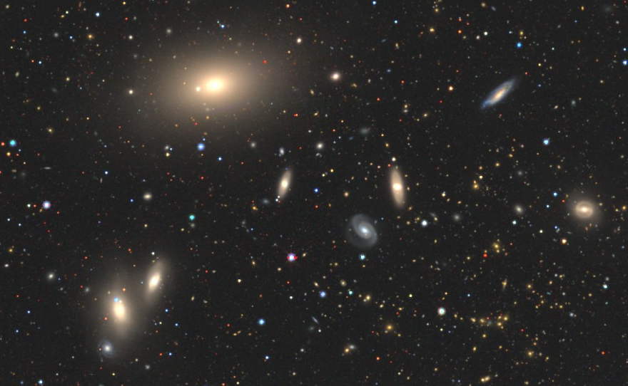

<!-- Title and description will be handled by the theme layout -->
<!-- Add a navigation bar under the description -->
<nav class="navbar">
  Here we present the results of the non-parametric analysis based on the Astromorphlib code. 
  <div class="nav-header">
    <h2>List of Galaxy Clusters</h2>
  </div>   
  <ul>
    <li><a href="MKW4/MKW4.html">MKW4</a></li>
    <li><a href="MKW6/MKW6.html">MKW6</a></li>
    <li><a href="A168/A168.html">A168</a></li>
    <li><a href="A119/A119.html">A119</a></li>
    <li><a href="MS116/MS116.html">MS116</a></li>
    <li><a href="A1644/A1644.html">A1644</a></li>
  </ul>
</nav>


<p align="right">Credit image: Legacy Survey DR9.</p>
<!-- Additional content can go below -->
